Session 2: Report clinic and tests for one and two groups
Discussion
1 Report clinic
⏱ 25 min
How the report is marked, a checklist, common errors, and RBV and VRIO
Acquisition
2 Choosing a test and the one-sample t-test
⏱ 40 min
Design first, then variable type, then the one-sample t-test in JASP
Practice
3 Rank-based tests
⏱ 50 min
The Wilcoxon signed-rank and Mann-Whitney U tests, with your-turn tasks
Investigation
4 Paired samples t-test
⏱ 25 min
Before-and-after data, run and reported in JASP
Assessment
5 Choosing correctly and recap
⏱ 20 min
The tests side by side, scenarios, common mistakes and the selection rules
Today’s work
| Time | Topic |
|---|---|
| 0:00 | Report clinic, with RBV and VRIO |
| 0:25 | Choosing a test, then the one-sample t-test |
| 1:05 | Break |
| 1:15 | Wilcoxon signed-rank and Mann-Whitney U |
| 2:05 | Break |
| 2:15 | Paired samples t-test |
| 2:40 | Choosing correctly, and recap |
| Criterion | Marks | What earns the marks |
|---|---|---|
| Dataset and task | 10 | Coursework file, exact names |
| A: the sample | 15 | Frequencies, means, SDs, three normality checks |
| B: two groups | 20 | Levene’s, correct row, t, df, p, d, meaning |
| C: relationship | 20 | r, p, R², labelled scatterplot, causation caution |
| D: recommendation | 20 | Built on A to C, one framework applied |
| Writing and appendices | 15 | Style, appendices, references, AI note |
DMM_Coursework_Data.csvEvidence, framework, action
In the teaching file, 57.5% of customers rate their intention to return at 4 or 5. Through the VRIO framework, this loyal customer base is valuable and hard for a new organiser to copy. The firm is yet to organise itself to use it. We recommend a returning-customer programme, with repeat bookings monitored over the next three events.
After this session you will be able to:
Question for the room
Which design is this: one group against a benchmark, two different groups, or the same cases measured twice?
The independent samples t-test, for two groups and a scale outcome, was covered in session 1.
Question for the room
The plan assumed 450 USD per customer. The 200 customers spent 505.65 USD on average. Is that gap larger than sampling variation would produce?
Decision rule for spending
| If | Decision | Write |
|---|---|---|
| p below .05 | Reject H₀ | Mean spending differs from 450 USD, in the direction of the mean |
| p .05 or above | Retain H₀ | No evidence that mean spending differs from 450 USD |
T-Tests → Classical → One Sample T-Test
Spending into Variables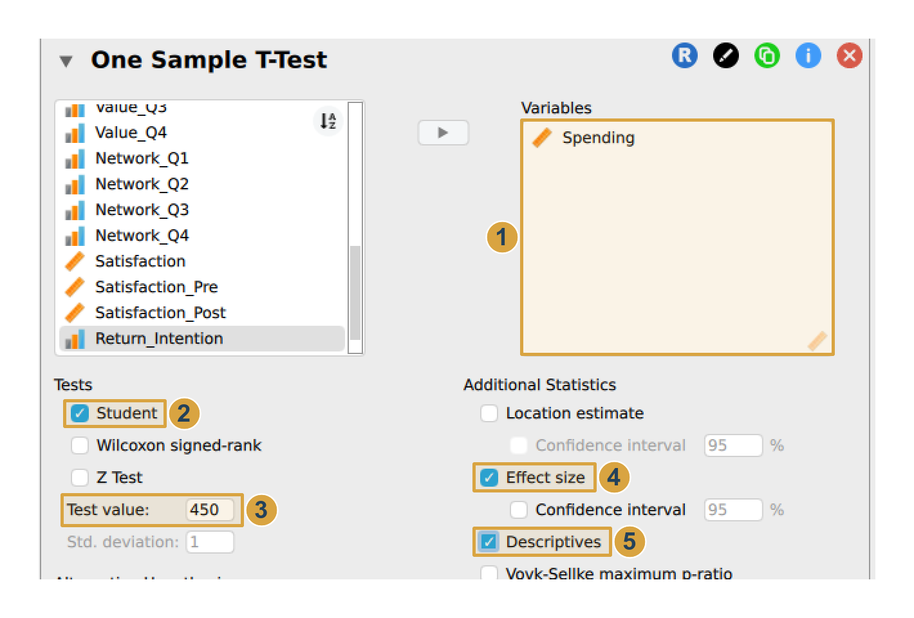
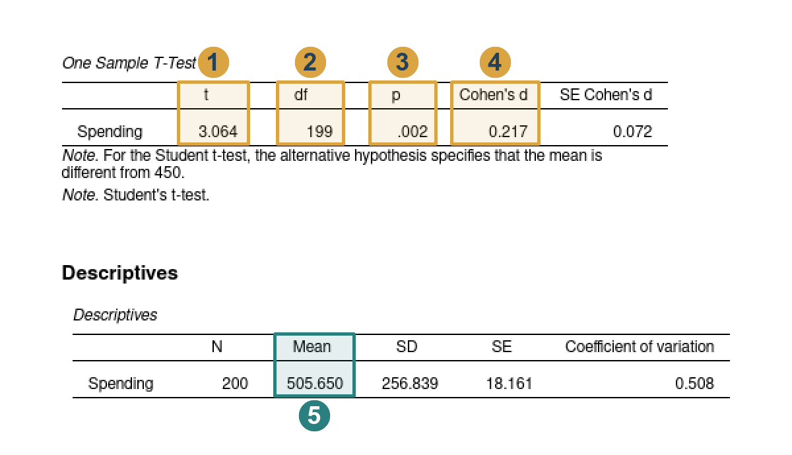
Decision on spending against the plan
p = .002 is below .05, so we reject H₀. Mean spending differs from the plan: customers spend more than 450 USD, t(199) = 3.06, p = .002.
Report sentence for spending
Mean spending (M = 505.65, SD = 256.84) was higher than the planned 450 USD, t(199) = 3.06, p = .002, d = 0.22. Customers spend more than the plan assumed.
4 minutes
Satisfaction in VariablesDoes mean satisfaction differ from the target of 4?
Your answer: t(____) = ____, p ____. The p-value is ____ .05, so we ____ H₀.
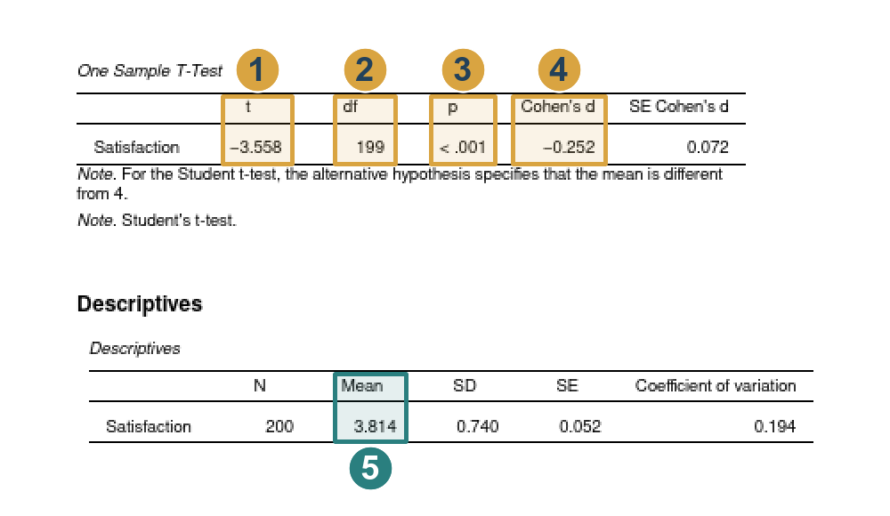
How far below the target is satisfaction, and how large is the effect?
Your answer: Mean satisfaction is ____, ____ points below 4. Cohen’s d is ____, a ____ effect.
Ten minutes.
Question for the room
Intention to return is a 1 to 5 rating. Do customers lean towards coming back, or sit at the midpoint of 3?
Decision rule for intention to return
| If | Decision | Write |
|---|---|---|
| p below .05 | Reject H₀ | The median differs from 3, in the direction of the median |
| p .05 or above | Retain H₀ | No evidence that the median differs from 3 |
The same panel: One Sample T-Test
Return_Intention into Variables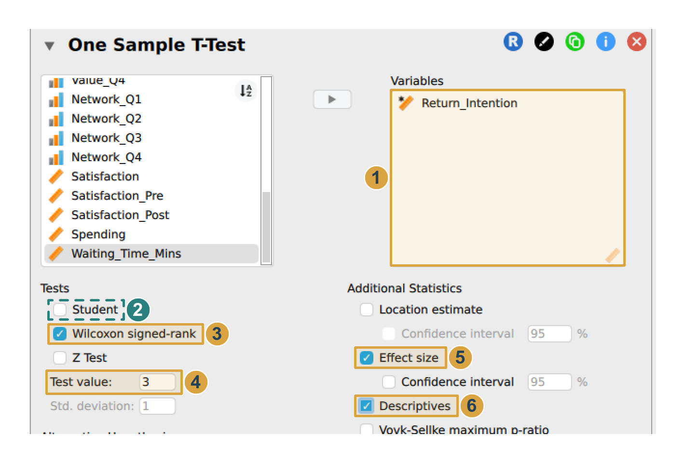
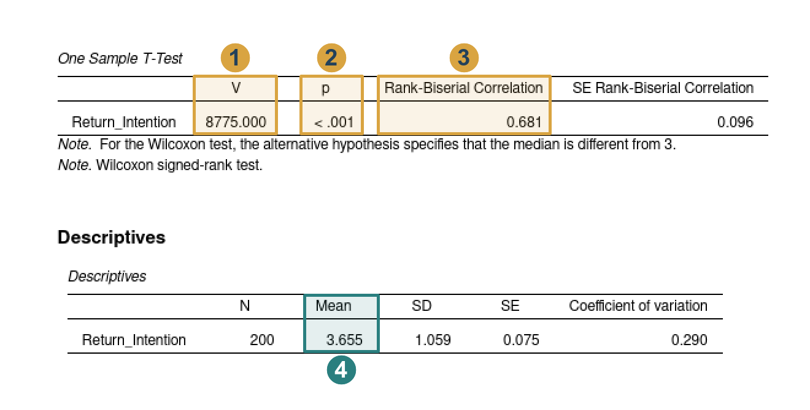
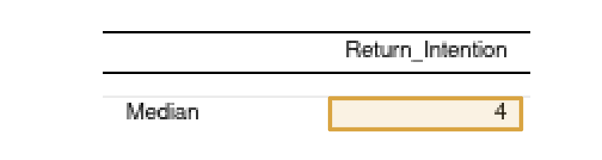
Decision on intention to return
p < .001 is below .05, so we reject H₀. Intention to return differs from the midpoint: the median is 4, above 3, V = 8775, p < .001.
Report sentence for intention to return
Return intention (Mdn = 4) was higher than the scale midpoint of 3, V = 8775, p < .001, rank-biserial r = .68. Most customers lean towards coming back.
3 minutes
Content_Q1 in VariablesDoes the typical content rating differ from the midpoint of 3?
Your answer: V = ____, p ____. The p-value is ____ .05, so we ____ H₀.
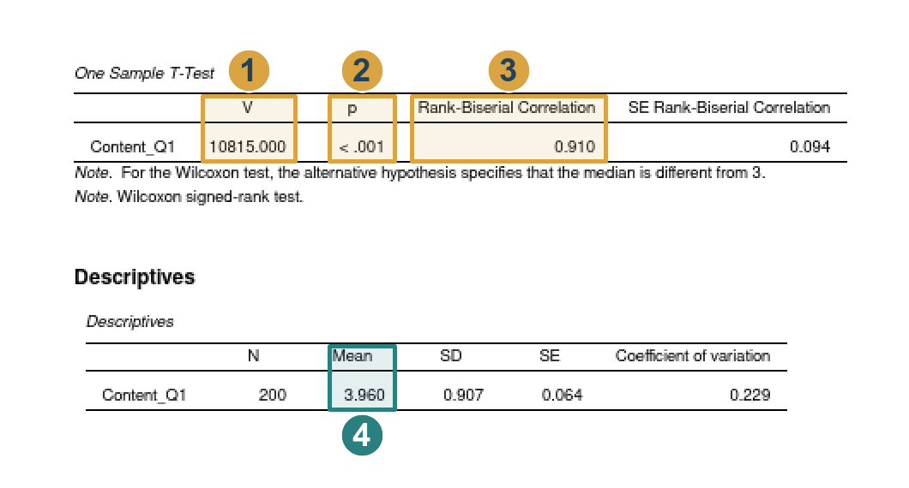
What is the median content rating, and how large is the effect?
Your answer: The median is ____, ____ the midpoint. Rank-biserial r is ____, a ____ effect.
Question for the room
Do female and male customers differ in their intention to return? Does the firm need one retention message, or two?
Decision rule for intention to return by gender
| If | Decision | Write |
|---|---|---|
| p below .05 | Reject H₀ | Intention to return differs between female and male customers |
| p .05 or above | Retain H₀ | No evidence of a difference between female and male customers |
Independent Samples T-Test, as in session 1
Return_Intention as the outcomeGender as the grouping variable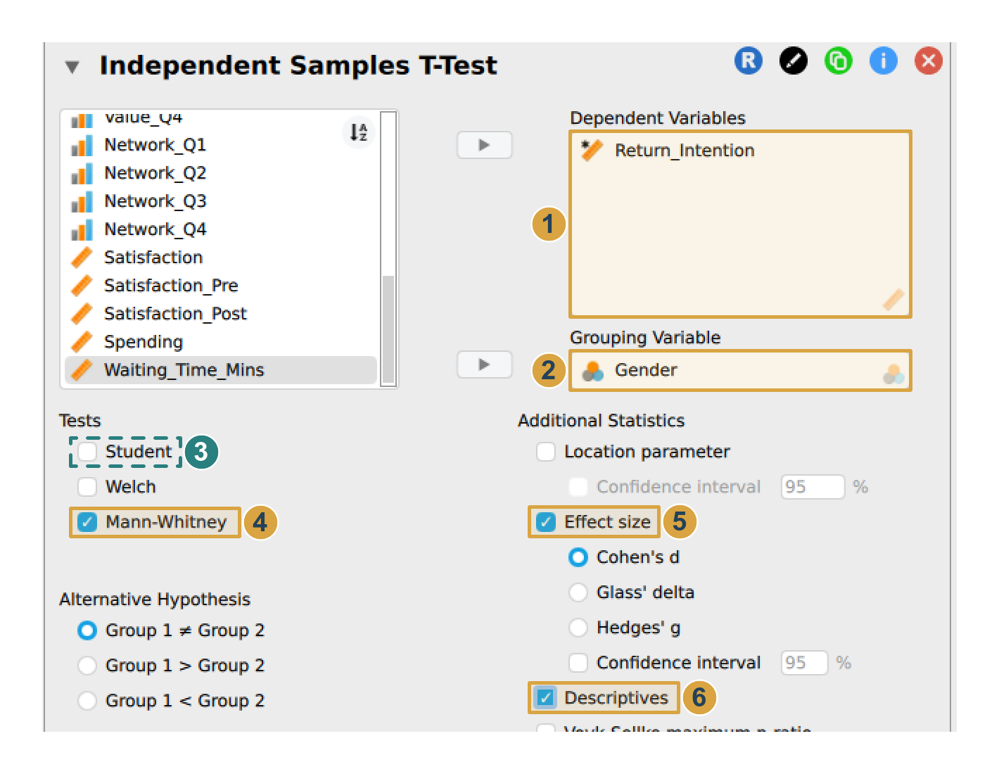
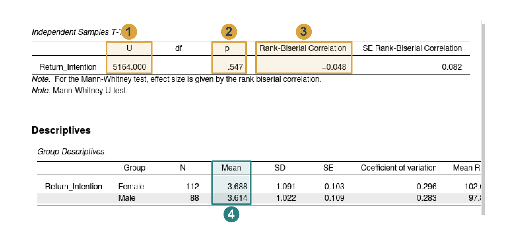
Decision on intention to return by gender
p = .547 is above .05, so we retain H₀. There is no evidence that intention to return differs between female and male customers, U = 5164, p = .547.
Report sentence for intention to return by gender
Return intention did not differ significantly between female (Mdn = 4) and male customers (Mdn = 4), U = 5164, p = .547. One retention plan can serve both groups.
3 minutes
Content_Q1 as the outcome, Gender as the grouping variableDo female and male customers differ in their content rating?
Your answer: U = ____, p = ____. The p-value is ____ .05, so we ____ H₀.
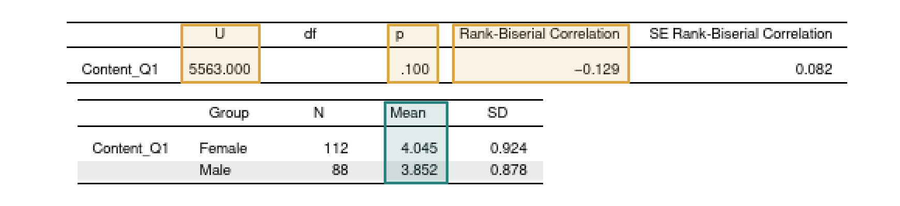
Female customers’ mean rating is a little higher. Should the manager plan for the two groups separately?
Your answer: Means ____ and ____. Rank-biserial r is ____, a ____ effect, and p is ____ .05. So the manager plans ____.
Ten minutes.
Question for the room
The same 200 customers rated their satisfaction before and after the event. Did the event change how they feel?
Decision rule for satisfaction before and after
| If | Decision | Write |
|---|---|---|
| p below .05 | Reject H₀ | Satisfaction changed, in the direction of the two means |
| p .05 or above | Retain H₀ | No evidence that satisfaction changed |
T-Tests → Classical → Paired Samples T-Test
Satisfaction_Pre and Satisfaction_Post together into Variable Pairs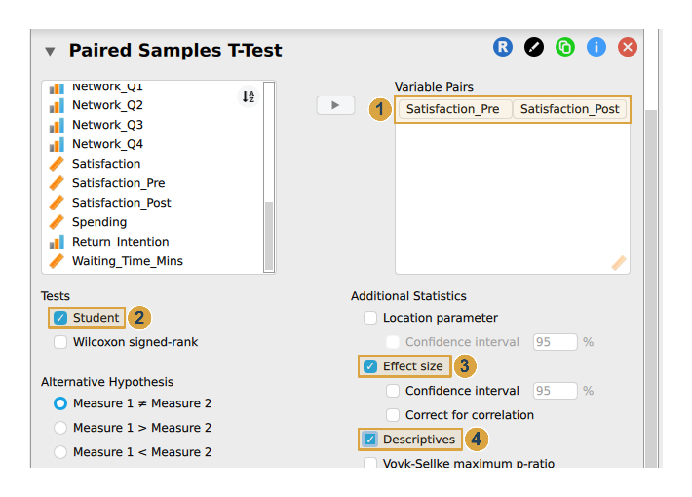
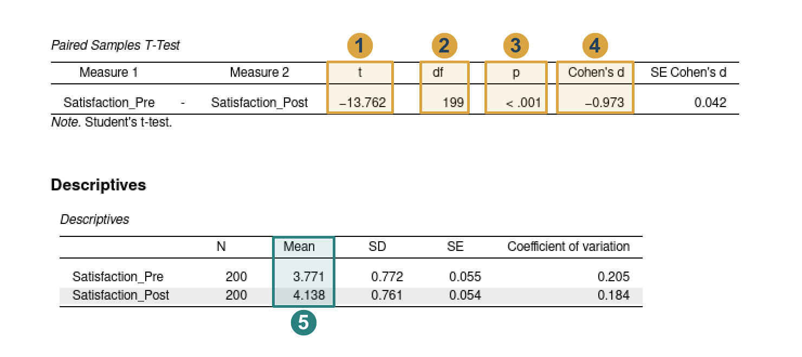
Decision on satisfaction before and after
p < .001 is below .05, so we reject H₀. Satisfaction changed: it rose from 3.77 before the event to 4.14 after it, t(199) = −13.76, p < .001.
Report sentence for satisfaction before and after
Satisfaction rose from before the event (M = 3.77, SD = 0.77) to after it (M = 4.14, SD = 0.76), t(199) = −13.76, p < .001, d = −0.97. Customers are more satisfied after the event.
The same customers rated content (Content_Q1) and value (Value_Q1), both 1 to 5. Which test fits?
Your answer: The ____ test, because the same customers gave ____ ratings, and both are ____.
2 minutes
Content_Q1 and Value_Q1 into Variable PairsDo customers rate content and value differently, and which is higher?
Your answer: W = ____, p = ____, so we ____ H₀. ____ is rated higher (means ____ and ____).
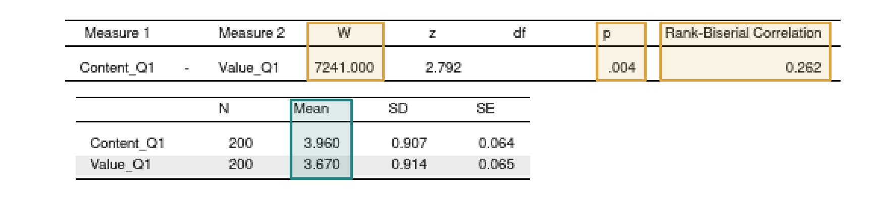
| Effect size | Small | Medium | Large |
|---|---|---|---|
| Cohen’s d (t-tests) | 0.20 | 0.50 | 0.80 |
| Rank-biserial r (rank tests) | .10 | .30 | .50 |
| Test | Design | Variable type | Compares |
|---|---|---|---|
| One-sample t-test | One group against a benchmark | Scale | Mean against the benchmark |
| Wilcoxon signed-rank | One group against a benchmark | Ordinal | Median against the benchmark |
| Independent samples t-test | Two independent groups | Scale | Two means |
| Mann-Whitney U | Two independent groups | Ordinal | Ranks of two groups |
| Paired samples t-test | The same cases twice | Scale | Mean of the differences |
We collected before-and-after scores from the same employees, so I will compare the two means using an independent t-test.
Question for the room
What is wrong with the manager’s choice, and which test fits the design?
Six selection rules